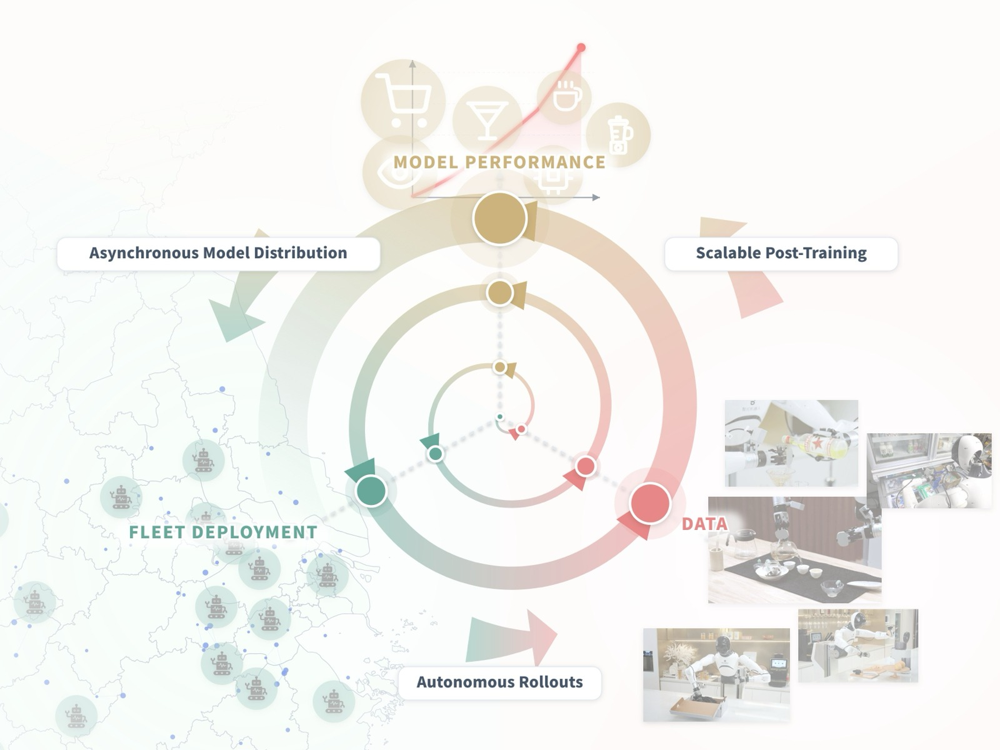
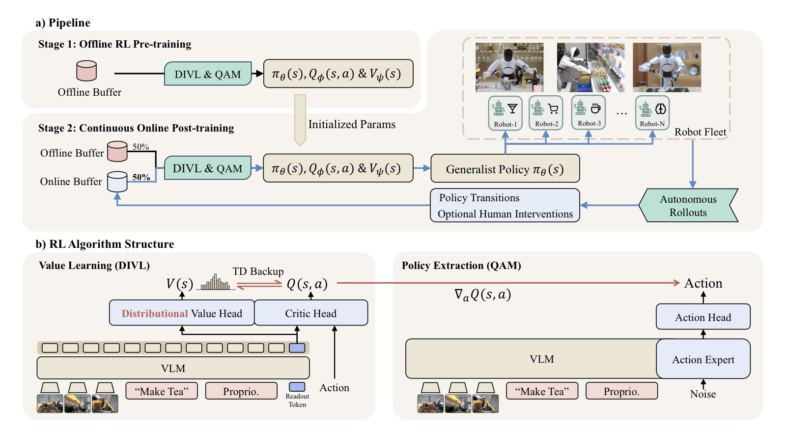
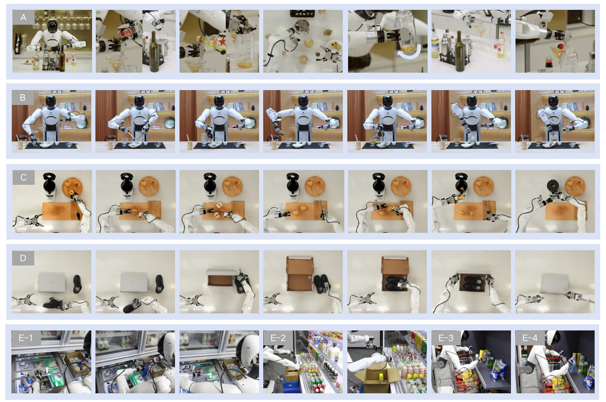
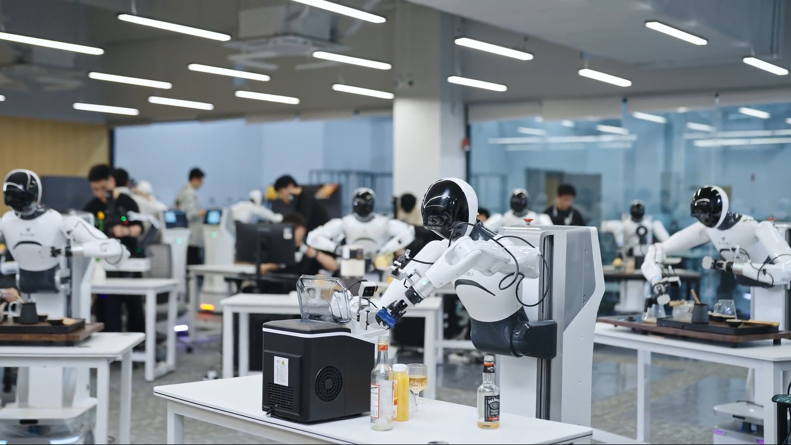
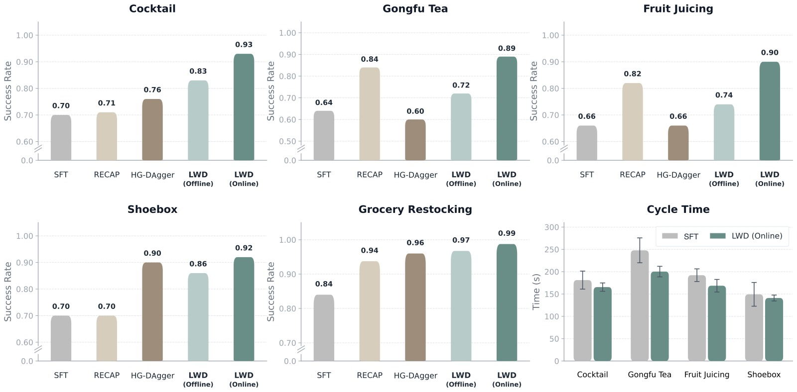
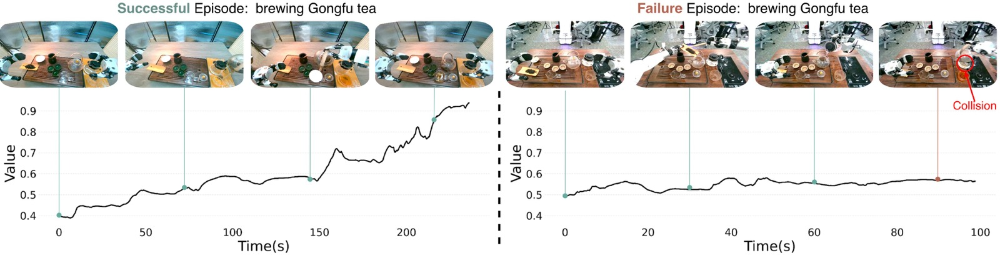
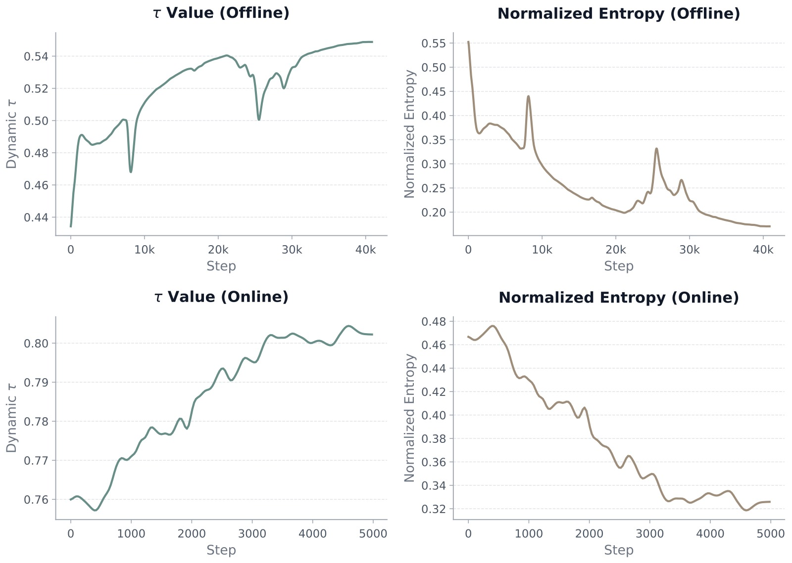

Learning While Deploying: Fleet-Scale Reinforcement Learning for Generalist Robot Policies
论文信息 - 作者：Yi Wang, Xinchen Li, Pengwei Xie, Pu Yang, Buqing Nie, Yunuo Cai, Qinglin Zhang, Chendi Qu, Jeffrey Wu, Jianheng Song, Xinlin Ren, Jingshun Huang, Mingjie Pan, Siyuan Feng, Zhi Chen, Jianlan Luo - 通讯作者：Jianlan Luo - 机构：Shanghai Innovation Institute, AGIBOT Finch, Columbia University - 投稿方向：IEEE 会议（投稿中） - arXiv ID：2605.00416 - 项目页面：https://finch.agibot.com/research/lwd
一、核心问题
通用机器人策略（VLA）在大规模离线预训练后，仍无法直接部署到真实世界。 根本原因在于：真实部署不是固定测试集——机器人进入家庭、商店、工作空间后，会不断遇到新物体、新布局、新用户指令和罕见的失败模式，这些远远超出预训练数据的覆盖范围。
现有方案的不足：
- 模仿学习类方法（HG-DAgger 等）：只利用成功示范和人类纠正作为行为克隆的标签，无法从失败尝试和部分进展中学习
- 在线 RL 方法（VLA-RL、RIPT 等）：依赖 on-policy 数据，样本效率低，且通常训练单一任务的 specialist 策略
- 离线 RL 方法（π₀.₆ 等）：收集-训练-部署周期割裂，部署中积累的经验无法立即回流用于策略改进
核心洞察：部署不应是训练的终点，而应是策略持续改进的数据来源。真正有价值的是舰队规模的部署经验——单台机器人只采样到部署分布的一小部分，而机器人群覆盖了多样化的任务、环境、物体和用户指令。
二、核心思路 / 方法
2.1 总体框架：Learning While Deploying (LWD)
LWD 构建了一个离线到在线（offline-to-online）RL 数据飞轮：

图1：LWD 数据飞轮总览。一个预训练的 VLA 模型先由人类收集的离线数据初始化。部署后，机器人群在多样化真实任务中自主收集在线交互数据，这些数据与离线 replay buffer 混合用于更新模型，更新后的模型再次部署以收集更多数据。关键区别在于：RL 利用任务奖励（成功/失败信号）而非仅模仿动作标签，因此能从失败尝试和部分进展中学习。
流程分为两个阶段，使用完全相同的 RL 目标，避免离线→在线切换时的分布不匹配：
阶段一：离线预训练（Offline Pretraining）
┌──────────────────────────────────────────────┐
│ B_off (Demo + Rollout + Play) │
│ ─────────────────────────── │
│ 输入 → DIVL 训练 Q_ϕ, V_ψ │
│ → QAM 更新 π_θ │
│ → 输出：初始化策略 + 值函数 │
└──────────────────────────────────────────────┘
阶段二：持续在线训练（Continuous Online Training）
┌──────────────────────────────────────────────┐
│ 16 台机器人异步部署 │
│ ↓ │
│ 自主 rollout + 人类干预 │
│ ↓ │
│ B_on（成功/失败/干预片段） │
│ ↓ │
│ 混合采样 B_off ∪ B_on │
│ ↓ │
│ DIVL + QAM 更新（同目标） │
│ ↓ │
│ 每 50 步广播新策略给所有机器人 │
└──────────────────────────────────────────────┘
2.2 方法架构

图2：LWD 方法概览（两个子图）。
子图 (a) Pipeline： 展示两阶段训练流程。阶段 1 在离线 buffer 上做 RL 预训练（使用演示数据、历史 rollout 和 play data）。阶段 2 是持续在线后训练——16 台机器人在 8 个真实任务上自主收集数据，进入在线 buffer，与离线 buffer 混合 replay，定期同步策略。
子图 (b) 算法结构： 包含两个核心模块——(1) 值学习模块：基于 VLM 的 shared backbone（Gemma3-270M + SigLIP-So400M）提取状态表征 zₜ，分布性值模型 V_ψ(s) 预测值分布，critic Q_ϕ(s,a) 使用双 Q 结构输出标量 Q 值；(2) 策略提取模块：基于 PaliGemma VLM + Gemma-300M action expert 的 flow 策略 π_θ(s)，通过 QAM loss 利用 critic 梯度改进动作生成。在线阶段策略的 VLM backbone 冻结，仅更新 action expert。
2.3 关键组件一：分布性隐式值学习（DIVL）
传统 IQL 使用标量 expectile 回归来估计状态值，这在舰队部署设定中存在严重缺陷：
舰队中不同机器人异步采集的数据多样且异构，同一 (s,a) 对应的回报可能多模态且重尾分布。标量 critic 会将不同结果压缩为单一平均值，抹去罕见但可复现的高回报模式。
DIVL 的核心改进：用分布性值模型替换标量 expectile 回归。
DIVL 工作流程：
Step 1: 学习值分布
p_ψ(v|s_t) = P(v = Q_ϕ(s_t, a_t) | a_t ∼ D(·|s_t))
用交叉熵损失拟合（C51 categorical discretization）：
L_V(ψ) = E[-log p_ψ(Q_bar(s_t, a_t) | s_t)]
Step 2: 用量化分位数构造 TD 目标
y_Q = r_t + γ^H · Quantile_τ(V_ψ(s_{t+H}))
其中 τ 控制乐观程度：
- τ=0.9：取分布的 90 分位数（乐观估计）
- τ=0.6：取分布的 60 分位数（保守估计）
关键：Quantile 在 replay 动作的支持集内选择，不进行跨动作空间的外推
适应性 τ 策略： τ 不应全局固定。DIVL 利用值分布的归一化熵来动态调节 τ：
- 高熵（分布弥散）→ 降低 τ，更保守，减少对不确定状态的高估
- 低熵（分布集中）→ 提高 τ，更乐观，信任 confident 的估计
理论保证： 论文证明了标量非对称回归与"先拟合分布再提取分位数"的二步过程在最优解上等价（Proposition 1），为 DIVL 提供了理论基础。
2.4 关键组件二：QAM 策略提取
Flow-based VLA 策略的动作通过多步去噪过程生成，直接反向传播 critic 梯度经过整个 ODE 轨迹计算昂贵且数值不稳定。
QAM（Q-learning with Adjoint Matching）的解决方案：
传统方法（难用）: QAM 方法（LWD 采用）:
z₀ ~ N(0,I) z₀ ~ N(0,I)
↓ ODE solver (多步) ↓ 参考 flow f_β 前向 rollout
a₁ = action {a_w} w∈[0,1] ← 参考轨迹
↓ ↓
∇_a Q(s, a₁) ∇_a Q(s, a₁) → adjoint 终端条件 g̃₁
↓ 反向传播整个 ODE (昂贵) ↓ 沿轨迹局部回归
∇_θ J L_QAM ≈ ||2f_δ/σ_w + σ_w·g̃_w||²
QAM 的数学形式——将 KL 正则化的策略改进目标：
转化为沿参考 flow 轨迹的局部回归目标（Eq. 7）。每个 replay minibatch 中：采样状态和噪声 → 用固定参考策略 f_β 生成参考轨迹 → 在终点评估 ∇_a Q → 解 adjoint 动力学 → 回归 f_θ 到局部目标。
三、训练目标
3.1 MDP 形式化
- 状态 s = (o, ℓ_k)：观测 + 语言指令，「冲茶」而非子任务序列
- 动作 chunk a_{t:t+H}：H=30 步动作
- 稀疏二元奖励：r=1 仅当 episode 成功，否则 r=0
- 折扣 γ=0.9999
3.2 离线阶段：n-step TD 冷启动
长时域任务（Gongfu Tea、Cocktail、Fruit Juice、Shoebox）的成功信号极度稀疏。离线阶段使用 10-step chunk 级 TD 加速奖励传播（等价于 300 物理步的 backup）：
短时域任务（grocery restocking）使用 1-step。如果 episode 在窗口内终止，截断 return 并移除 bootstrap 项。
在线阶段统一使用 1-step TD：在线轨迹可能混合策略动作和人类干预，更长的 backup 可能跨越不一致的执行源。
3.3 离线数据组成
| 任务 | Demo | Rollout (成功) | Rollout (失败) | Play | 总计 |
|---|---|---|---|---|---|
| Restocking | 14.5h | 10.7h | 1.7h | 7.5h | 34.4h |
| Correction | 12.7h | 10.8h | 1.7h | 9.7h | 34.9h |
| Freezer | 10.8h | 7.7h | 4.6h | 3.3h | 26.4h |
| Open-Cooler | 11.1h | 13.7h | 1.3h | 0.8h | 26.9h |
| Gongfu Tea | 102.3h | 12.4h | 4.4h | 43.6h | 162.7h |
| Fruit Juice | 100.5h | 17.4h | 14.7h | 47.1h | 179.8h |
| Cocktail | 47.3h | 4.4h | 7.4h | 28.0h | 87.1h |
| Shoebox | 37.3h | 11.7h | 3.3h | 48.0h | 100.3h |
| 总计 | 336.6h | 88.8h | 39.2h | 187.9h | 652.5h |
三种数据类型：
- Demo：人类专家收集的成功轨迹
- Rollout：历史策略产生的成功+失败轨迹
- Play：人类引导的失败模式探索数据
四、实验与结果
4.1 实验设置

图3：8 个真实世界操纵任务的示意图（5 个子图 A-E）。
【子图 A】Make Cocktail（制作鸡尾酒）： 完整的长时域任务序列——量取多种酒液、加入冰块、摇晃调酒器、倒入高脚杯、装饰樱桃。涉及多种容器的精确操作和液体处理。
【子图 B】Brew Gongfu Tea（泡工夫茶）： 6 阶段序列——加茶叶、洗茶/沥水、热水冲泡、转移至公道杯、分入三个茶杯、上茶。每一步都对精度有较高要求，且阶段间存在强依赖。
【子图 C】Make Fruit Juice（榨果汁）： 多步序列——切水果并重新定向、切片、转移至榨汁机、盖上盖子、旋转控制旋钮启动榨汁。包含工具使用和旋钮操作的精确控制。
【子图 D】Pack Shoes（打包鞋盒）： 将鞋子装入鞋盒并整齐放置。测试精细操控和空间规划能力。
【子图 E】Grocery Restocking（杂货补货）4 个子任务： Flat-Shelf Restocking（平面货架补货）、Misplaced-Item Correction（错放物品纠正）、Freezer Restocking with Door Operation（冷柜补货+开关门）、Open-Cooler Restocking with Carton Handling（开放式冷柜补货+纸箱处理）。测试语义 grounding、接触丰富操纵和错误恢复能力。
整个测试套件覆盖语义理解、接触丰富操控、长时域执行和错误恢复。
硬件设置：
- Agibot G1 双臂平台，每臂 7-DoF + 平行爪
- 3 个 RGB 相机（1 头部 + 2 腕部）
- 30Hz 关节位置控制

图4：用于在线数据收集的 16 台 Agibot G1 双臂机器人群。每个实验方法分配 4 小时 wall-clock 预算，约相当于 60 机器人小时的总在线数据。在线训练期间，机器人异步执行 rollout，所有任务的 episode 汇集到单一在线 replay buffer。
4.2 主要结果

图5：8 个任务的成功率得分和长时域任务的 cycle time 对比。分为两个视图：
左侧成功率得分（共 8 个任务）： 每个任务的各个方法得分以垂直柱状图并排展示。深蓝色（LWD Online）在所有长时域任务上明显高于其他方法。Grocery restocking 任务上，所有后训练方法分数都较高（天花板效应），但 LWD 仍保持最佳或接近最佳。
右侧 cycle time： 长时域任务上 LWD 将平均 cycle time 降低 23.75 秒（相对于 SFT）。这一效率提升说明 critic 引导的策略更新不仅改进了最终成功率，还减少了机器人执行中的犹豫、重试和不稳定行为。
| 方法 | Restock | Correct | Freezer | Cooler | Tea | Juice | Cocktail | Shoebox | Avg |
|---|---|---|---|---|---|---|---|---|---|
| SFT | 0.70 | 0.88 | 0.83 | 0.95 | 0.64 | 0.66 | 0.70 | 0.70 | 0.76 |
| RECAP | 0.95 | 0.96 | 0.94 | 0.95 | 0.84 | 0.82 | 0.71 | 0.70 | 0.85 |
| HG-DAgger | 1.00 | 0.92 | 0.92 | 1.00 | 0.60 | 0.66 | 0.76 | 0.90 | 0.85 |
| LWD (Offline) | 1.00 | 1.00 | 0.92 | 0.95 | 0.72 | 0.74 | 0.83 | 0.86 | 0.88 |
| LWD (Online) | 1.00 | 1.00 | 0.97 | 0.98 | 0.89 | 0.90 | 0.93 | 0.92 | 0.95 |
关键发现：
- LWD Online 全面最优：平均得分 0.95（最接近的 baseline 0.85），长时域平均 0.91 vs SFT 0.68——提升 23 个百分点
- 离线 RL 已经有效：LWD Offline（0.88）超越 RECAP 和 HG-DAgger（均 0.85），证明 reward-based 训练优于纯模仿学习
- HG-DAgger 在长时域上退步：某些任务甚至不如 SFT——DAgger 式训练依赖人类纠正数据的质量，但人类纠正的变异性大，对状态的探索覆盖有限
- RL 对长时域任务的独特优势：终端成功信号通过 TD backup 传播到早期决策步骤，改善所有阶段的值估计
4.3 值函数可视化

图6：Gongfu Tea 任务上学习到的分布性值函数 V 的分位数值（quantile values）随时间变化的两个代表性 episode。
左图（成功 episode）： 值估计随着机器人完成关键子步骤（加茶叶→洗茶→冲泡→倒茶）而单调上升，从约 0.3 逐渐增加到接近 1.0。这表明尽管只有终端稀疏奖励，值函数仍然捕捉到了任务进展的结构化信号——这是 RL 优于模仿学习的关键差异：RL 能从"状态→奖励预测"中学到进展信号，而模仿学习只能复制动作分布。
右图（失败 episode）： 值估计在局部有波动但始终停留在较低水平（约 0.2-0.4），在未达到已标注的任务里程碑前就停止上升。说明值函数能区分进展和停滞。
这一可视化不是用于验证的评估指标，而是定性诊断——证明了 DIVL 在稀疏奖励下成功学到了有意义的值估计。附录中的值分布可视化进一步显示：成功 episode 中预测的分布保持单峰且模式从 0.4 稳步上升到 1.0，而失败 episode 的模式仅在 0.5-0.6 间微弱变化后趋于平稳。
4.4 消融实验
消融一：分布性值学习 vs 标量 expectile 回归
| Method | Short-Horizon Offline | Short-Horizon Online | Long-Horizon Offline | Long-Horizon Online |
|---|---|---|---|---|
| Expectile Regression | 0.96 | 0.97 | 0.72 | 0.78 |
| DIVL | 0.97 (+1.0%) | 0.99 (+2.1%) | 0.79 (+9.7%) | 0.91 (+16.7%) |
发现：
- DIVL 在所有设置下均优于标量 expectile 回归
- 长时域任务上的增益尤其显著——在线阶段 16.7% 的差距说明分布性表示对异构、多模态回报的建模优势
- 短时域任务增益较小（~1-2%），因为 grocery restocking 任务相对简单，回报分布的方差本身较小
- 标量值函数将多种结果压缩为单一平均值，在网络规模的异构 replay 中模糊了罕见但可复现的成功模式
消融二：适应性 τ 策略（离线阶段）
| Method | Restock | Correct | Freezer | Cooler | Tea | Juice | Cocktail | Shoebox | Avg |
|---|---|---|---|---|---|---|---|---|---|
| Constant τ=0.52 | 0.85 | 0.88 | 0.94 | 0.95 | 0.70 | 0.76 | 0.70 | 0.90 | 0.84 |
| Adaptive τ | 1.00 | 1.00 | 0.92 | 0.95 | 0.72 | 0.74 | 0.83 | 0.86 | 0.88 |
发现：
- 适应性 τ 从 0.84 → 0.88 全面改进
- 尤其在 Restocking、Correction 和 Cocktail 上提升最明显
- 常数值 τ=0.52 是适应性 τ 训练中的经验平均值——这意味着适应性策略并非简单地找到了"更好的平均 τ"，而是根据每个状态的不确定性进行了差异化校准

图7：离线到在线训练过程中 τ 值和归一化熵的动态变化。
上曲线（τ 值）： τ 从离线阶段的约 0.6 稳步上升至在线阶段的约 0.9。离线阶段使用较低的 τ（较保守），因为值函数初始化时对各种状态都不确定。随着在线数据积累和值估计的改进，τ 自然地增加。
下曲线（归一化熵）： 熵从离线到在线持续下降，表明值估计的置信度在不断提高。随着更多部署数据的涌入，值分布越来越集中，不确定性逐渐消除。
两者的关系体现了 DIVL 自我校准的机制： 值函数越确定（低熵）→ τ 自动升高 → 更乐观的 bootstrap 目标 → 驱动更强的策略改进。反之，不确定的状态自动降低 τ → 减少过估计风险。这种"以不确定性为条件的乐观主义"是 DIVL 在异构舰队数据上稳定的关键。
五、关键洞察与技术亮点
5.1 为什么分布性值学习对舰队 RL 重要
舰队部署 = 多台机器人在不同任务、场景、配置下异步收集数据 → 同一状态可能对应多种不同质量的动作（人类专家 vs 初始策略 vs 改进后策略）→ 回报分布多模态。标量值估计取"平均回报"会平滑掉高回报模式，而分位数 bootstrap 保留了「存在某种方式可以达到高回报」的信息。
5.2 离线→在线使用统一 RL 目标
大多数 offline-to-online RL 方法在离线阶段使用保守的 policy constraint，在线阶段切换到标准 RL 目标——这种切换导致 critic 过保守、策略过谨慎，需要"warm-up"来适应新数据。LWD 的两个阶段共享 DIVL + QAM 目标，因为：
- DIVL 的 in-support 量化分位数 bootstrap 本就保守（不跨动作空间外推），无需额外 penalty
- 在线阶段随着数据多样化，适应性 τ 自然放松保守程度
5.3 稀疏奖励下的值传播策略
长时域任务（3-5 分钟、数千步）只有终端稀疏奖励。LWD 在离线阶段使用 n-step TD（n=10 相当于 300 步的 backup）冷启动 critic，暴力加速奖励信号传播。在线阶段放弃多步（因为人类干预破坏了连续性），改为 1-step TD——但此时 critic 已有良好的初始化，不需要多步。
5.4 冻结 VLM Backbone 的在线策略更新
在线阶段策略的 PaliGemma VLM backbone 冻结，只更新 Gemma-300M action expert。这样：
- 保持预训练的视觉-语言表征（避免灾难性遗忘）
- 减少计算量（action expert 参数远少于 VLM backbone）
- 让值网络（V_ψ, Q_ϕ）全参数更新以适应变化的 replay 分布
六、代码实现解读
论文未发布代码，但给出了详细的网络架构和训练伪代码。以下基于论文描述还原关键设计。
6.1 网络架构总览
┌─────────────────────────────────────────────────────────┐
│ Policy (π_θ) │
│ ┌─────────────────────────────────────────────────┐ │
│ │ PaliGemma VLM Backbone │ │
│ │ ┌──────────┐ ┌──────────┐ │ │
│ │ │ SigLIP │ │ Gemma-2B │ │ │
│ │ │ Vision │───┤ Language │──→ z_t (state rep) │ │
│ │ └──────────┘ └──────────┘ │ │
│ └──────────────────────┬──────────────────────────┘ │
│ ↓ │
│ ┌─────────────────────────────────────────────────┐ │
│ │ Gemma-300M Action Expert (Flow) │ │
│ │ 在线阶段：仅此部分可训练 │ │
│ │ s, a₀, w → f_θ(s, a_w, w) → velocity field │ │
│ └─────────────────────────────────────────────────┘ │
└─────────────────────────────────────────────────────────┘
┌─────────────────────────────────────────────────────────┐
│ Value/Critic (V_ψ, Q_ϕ) │
│ ┌─────────────────────────────────────────────────┐ │
│ │ Shared VLM Backbone │ │
│ │ ┌──────────┐ ┌───────────┐ │ │
│ │ │ SigLIP │ │ Gemma-3 │ │ │
│ │ │ So400M │───┤ 270M-IT │──→ z_t (readout) │ │
│ │ └──────────┘ └───────────┘ │ │
│ └──────────────┬──────────────────────────────────┘ │
│ ↓ │
│ ┌──────────────────────┐ ┌──────────────────────────┐ │
│ │ Value Head (V_ψ) │ │ Critic Head (Q_ϕ) │ │
│ │ → Categorical(201) │ │ → 双 Q (clipped) │ │
│ │ → p_ψ(v|s) │ │ → 条件: z_t + attn(a) │ │
│ │ → Quantile_τ │ │ → 标量 Q 值 │ │
│ └──────────────────────┘ └──────────────────────────┘ │
└─────────────────────────────────────────────────────────┘
关键设计选择：
- Policy 和 Value/Critic 使用不同的 VLM backbone（2B vs 270M），解耦行动生成和价值优化
- Critic 通过 learned temporal attention pooling 编码 action chunk a_t，与 z_t 拼接后送入双 Q 头
- 双 Q 取 min 参与 DIVL 目标构建和 TD backup（减少过估计）
- Value head 输出 201 个类别在 [-0.1, 1.1] 上的 logits（C51 categorical）
6.2 Learner 单步更新流程
对应论文 Algorithm 2（Learner 函数），每次参数更新包含：
LearnerStep(minibatch B, Q_ϕ, V_ψ, π_θ, π_β, EMA rate ρ):
═══ DIVL 值学习 ═══
1. 更新 ψ:
对每个 (s,a) → Q_bar(s,a) via target EMA critic
→ C51 projection 到 201 原子 → target distribution m
→ L_V = -Σ m_i log p_ψ(i|s) // 交叉熵
2. 计算 Q 的 TD target:
τ = clip(τ_base - α·H(s_{t+H}), τ_min, τ_max)
→ 停止梯度
y_Q = r_t + γ^H · Quantile_τ(V_ψ(s_{t+H}))
3. 更新 ϕ:
L_Q = (Q_ϕ(s_t, a_t) - y_Q)² // MSE
4. 更新 target: φ_bar ← ρ·φ_bar + (1-ρ)·φ // EMA
═══ QAM 策略提取 ═══
5. 采样噪声 a₀ ~ N(0,I)
6. 用固定 π_β 前向 rollout 生成参考轨迹 {a_w}
7. 在终点计算: g̃₁ = -∇_a[Q_ϕ(s, a₁)/λ] // critic 梯度
8. 解 adjoint 动力学 → 沿轨迹的局部目标
9. 更新 θ: L_QAM = E[∫₀¹‖2f_δ/σ_w + σ_w·g̃_w‖² dw]
return (Q_ϕ, V_ψ, π_θ, Q_bar)
6.3 分布式训练基础设施
论文附录详细描述了 LWD 的分布式数据基础设施（图 8 未外显展示）：
Actor Fleet (16 Robots) Distribution & Coordination Cloud Learner (SPMD JAX)
┌─────────────────────┐ ┌─────────────────────┐ ┌──────────────────────┐
│ Robot 1 ──┐ │ │ │ │ DRB Reader → Learner │
│ Robot 2 ──┤ Edge │ episodes│ Object Storage │version │ (Host 1) │
│ ⋮ ├─Client──┼───────→│ │snapshot│ │
│ Robot N ──┘ │ │ Message Queue │───────→│ DRB Reader → Learner │
│ │ events │ │ fanout │ (Host M) │
└──────────────────────┘ │ Coordinator │ └──────────────────────┘
↑ └─────────────────────┘ │
│ │
└──────────── model weights (fanout via MQ) ←─────────────────────┘
关键可靠性指标： 在 8 小时、16 机器人的在线 RL 运行中，1604 个 episode 100% 成功完成了端到端 pipeline。Episode 从中产生到对 learner 可用的 P50 延迟为 41 秒。
七、局限性
- 在线更新策略过于简单：当前使用固定的实时更新调度（每 50 步同步一次），对于更大规模部署或长期持续改进可能不够优化
- 长时域任务依赖单一简短指令：如「冲茶」，缺少更细粒度的任务分解、视觉-语言推理和错误恢复提示——复杂任务需要更强的 VL 推理能力进行子任务规划
- 不建模执行安全：当前框架没有显式的安全感知学习或控制机制，这对于可靠的现实世界部署至关重要
- 只有一个 policy 做所有任务：虽然这也是其优势，但在极端长尾场景下，共享策略可能面临负迁移
八、关键概念速查
| 概念 | 解释 |
|---|---|
| LWD | Learning While Deploying，部署中学习框架 |
| VLA | Vision-Language-Action，视觉-语言-动作通用策略 |
| DIVL | Distributional Implicit Value Learning，分布性隐式值学习，用值分布替代标量回归 |
| QAM | Q-learning with Adjoint Matching，通过 adjoint 匹配将 critic 梯度转化为 flow 策略的局部回归目标 |
| IQL | Implicit Q-Learning，通过不对称 loss（expectile）隐式改进策略，不做显式 max Q |
| Flow Matching | 流匹配生成模型，通过拟合速度场生成连续动作分布 |
| C51 | Categorical DQN 的值分布离散化方法，将连续值域投影到固定类别上 |
| Expectile vs Quantile | expectile（p=2 不对称 loss）对应 IQL；quantile（p=1）对应 DIVL |
| Offline-to-Online RL | 先离线预训练 value/policy，再在线持续微调，使用统一 RL 目标 |
| n-step TD | 多步 TD backup，离线用于加速稀疏奖励传播，在线用 1-step |
| Adaptive τ | 基于值分布熵动态调整乐观程度，不确定时保守，确定时乐观 |
| Action Chunk | H=30 步动作作为一个预测单元，策略一次输出 1 秒的动作序列 |
| Readout Token | 从 Transformer 输出中提取的紧凑状态表征，用于 value/critic 预测 |
| Double Q | 双 Q 网络取 min 减少过估计，用于 DIVL 目标构建 |